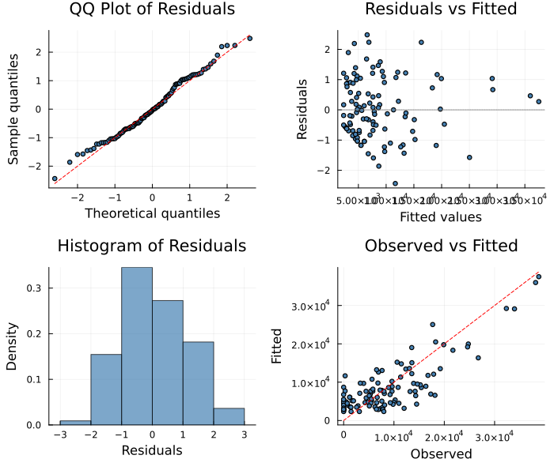
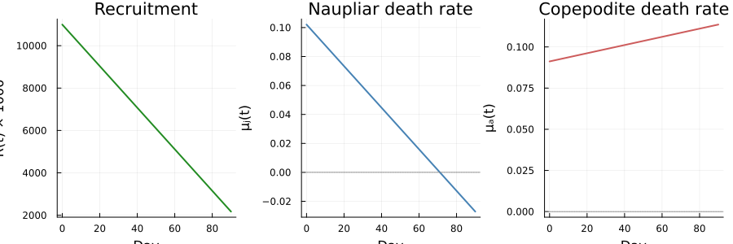
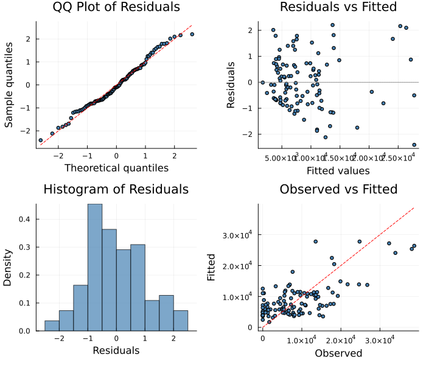

Copepod Stage-Structured Population Model
Overview
This vignette demonstrates PartiallySpecifiedModels.jl on a complex, multivariate ecological model: the 11-stage copepod population model from Wood (2001). This is the canonical PSM example — the model that motivated the original methodology.
The copepod Calanus finmarchicus passes through 11 developmental stages (6 naupliar, 5 copepodite). Stage durations are known from laboratory experiments, but three vital rates are unknown functions of time:
\[R(t)\]
— egg recruitment rate\[\mu_j(t)\]
— naupliar (juvenile) per-capita death rate\[\mu_a(t)\]
— copepodite (adult) per-capita death rate
With 11 simultaneously observed state variables, 3 unknown functions, and 45 total parameters, this is a substantially more complex problem than the Lotka–Volterra example.
Setup
using PartiallySpecifiedModels
using PartiallySpecifiedModels: solve
using OrdinaryDiffEq
using DelimitedFiles
using Plots
using PrintfData
The data consist of abundance estimates for each of the 11 developmental stages, observed at 10 time points over 90 days:
Observations: 10 times × 11 stages
Time range: 0.0–90.0 days
Total data points: 110p_data = plot(xlabel="Day", ylabel="Abundance", title="Copepod stage abundances",
legend=:topright)
stage_names = ["N1", "N2", "N3", "N4", "N5", "N6", "C1", "C2", "C3", "C4", "C5"]
for j in [1, 3, 6, 7, 11]
scatter!(p_data, data_times, data_values[:, j], label=stage_names[j], ms=4)
end
p_data
Model
Stage-structured dynamics
Each stage $i$ has exponential residence time with known mean duration $c_i$. The rate of passage through stage $i$ is $s_i / c_i$:
\[\frac{ds_i}{dt} = \text{inflow}_i - \frac{s_i}{c_i} - \mu(t) \cdot s_i\]
where:
\[\text{inflow}_1 = R(t) \times 1000\]
(recruitment, scaled)\[\text{inflow}_i = s_{i-1} / c_{i-1}\]
for $i > 1$ (outflow from previous stage)\[\mu(t) = \mu_j(t)\]
for stages 1–6, $\mu_a(t)$ for stages 7–11
# Known stage durations (days)
durations = [0.75, 1.4, 4.55, 2.8, 2.5, 1.7, 3.5, 3.1, 3.2, 3.7, 4.7]
function copepod!(du, u, p, t)
R_t = p.R(t) * 1000.0
μ_j = p.mu_j(t)
μ_a = p.mu_a(t)
inflow = R_t
for i in 1:11
death = i <= 6 ? μ_j : μ_a
du[i] = inflow - u[i] / durations[i] - death * u[i]
inflow = u[i] / durations[i]
end
endcopepod! (generic function with 1 method)Initial conditions
We compute steady-state abundances from the initial values of the unknown functions. This ensures the model starts in a self-consistent state:
function compute_u0(p)
R0 = p.R(0.0) * 1000.0
μ_j0 = p.mu_j(0.0)
μ_a0 = p.mu_a(0.0)
u0 = zeros(Float64, 11)
inflow = R0
for i in 1:11
death = i <= 6 ? μ_j0 : μ_a0
u0[i] = inflow / (1.0 / durations[i] + death)
inflow = u0[i] / durations[i]
end
u0
endcompute_u0 (generic function with 1 method)Note that compute_u0 receives the parameter struct p containing callable unknown functions. This means the initial conditions are automatically consistent with the current iterate during the IRLS optimization.
Unknown Function Approximators
Each unknown function gets 15 B-spline knots over the observation period $[0, 90]$ days:
Total parameters: 45The initial guesses encode biological prior knowledge:
- Recruitment $R(t)$: Gaussian pulse peaking at day 30 (spring spawning)
- Naupliar death $\mu_j(t)$: exponential decay (mortality decreases as conditions improve)
- Copepodite death $\mu_a(t)$: constant (no prior information)
Building and Solving
prob = PSMProblem(copepod!, compute_u0, (0.0, 90.0),
[approx_R, approx_mu_j, approx_mu_a];
data_times = data_times,
data_values = data_values,
obs_to_state = collect(1:11),
known_params = NamedTuple(),
likelihood = Gaussian(),
solver = BS3(),
abstol = 1e-6, reltol = 1e-6, maxiters = 10000)PSMProblem{typeof(copepod!), typeof(compute_u0), Gaussian, BS3{typeof(OrdinaryDiffEqCore.trivial_limiter!), typeof(OrdinaryDiffEqCore.trivial_limiter!), Static.False}}(copepod!, compute_u0, (0.0, 90.0), BSplineApproximator[BSplineApproximator(:R, (0.0, 90.0), 15, var"#2#3"()), BSplineApproximator(:mu_j, (0.0, 90.0), 15, var"#5#6"()), BSplineApproximator(:mu_a, (0.0, 90.0), 15, var"#8#9"())], [0.0, 10.0, 20.0, 30.0, 40.0, 50.0, 60.0, 70.0, 80.0, 90.0], [2853.9353 0.0 … 6893.1885 7983.0894; 10981.5 5793.3442 … 0.0 1473.7781; … ; 0.0 0.0 … 5107.6265 0.0; 1660.5525 15433.848 … 12018.808 0.0], [1.0 1.0 … 1.0 1.0; 1.0 1.0 … 1.0 1.0; … ; 1.0 1.0 … 1.0 1.0; 1.0 1.0 … 1.0 1.0], [1, 2, 3, 4, 5, 6, 7, 8, 9, 10, 11], NamedTuple(), Gaussian(), BS3{typeof(OrdinaryDiffEqCore.trivial_limiter!), typeof(OrdinaryDiffEqCore.trivial_limiter!), Static.False}(OrdinaryDiffEqCore.trivial_limiter!, OrdinaryDiffEqCore.trivial_limiter!, static(false)), Dict{Symbol, Any}(:maxiters => 10000, :reltol => 1.0e-6, :abstol => 1.0e-6), false, Float64[], nothing)
┌ Warning: LAML: the objective converged but the parameters did not — one more PCLS step from the reported fit moves β by 0.0367 (relative), above 0.001. The fit stopped on a flat ridge of the penalized objective: the fitted FUNCTIONS are usable, but individual coefficients and their covariance are not pinned. See `convergence.ridge` and `convergence.final_parameter_step`.
└ @ PartiallySpecifiedModels ~/Projects/psm/PartiallySpecifiedModels.jl/src/solver.jl:2204
Data loss (SS): 3.8067e+09
Penalized obj: 1.9286e+09
EDF: 2.29
Smoothing λ: [2.354e17, 2.354e17, 2.354e17]Results
Fitted Trajectories
pred = sol.fitted_values
layout = @layout [a b; c d]
plots_stages = []
for (stages, title) in [([1,2,3], "Naupliar 1–3"), ([4,5,6], "Naupliar 4–6"),
([7,8,9], "Copepodite 1–3"), ([10,11], "Copepodite 4–5")]
p = plot(xlabel="Day", ylabel="Abundance", title=title, legend=:topright)
for j in stages
scatter!(p, data_times, data_values[:, j], label=stage_names[j], ms=4, alpha=0.7)
plot!(p, data_times, pred[:, j], lw=2, label=nothing)
end
push!(plots_stages, p)
end
plot(plots_stages..., layout=(2, 2), size=(800, 600))
Estimated Unknown Functions
t_grid = range(0.0, 90.0, length=200)
p1 = plot(t_grid, [sol.unknown_functions[:R](t) * 1000.0 for t in t_grid],
xlabel="Day", ylabel="R(t) × 1000",
title="Recruitment", lw=2, color=:forestgreen, label=nothing)
p2 = plot(t_grid, [sol.unknown_functions[:mu_j](t) for t in t_grid],
xlabel="Day", ylabel="μⱼ(t)",
title="Naupliar death rate", lw=2, color=:steelblue, label=nothing)
hline!(p2, [0.0], color=:gray, ls=:dot, label=nothing)
p3 = plot(t_grid, [sol.unknown_functions[:mu_a](t) for t in t_grid],
xlabel="Day", ylabel="μₐ(t)",
title="Copepodite death rate", lw=2, color=:indianred, label=nothing)
hline!(p3, [0.0], color=:gray, ls=:dot, label=nothing)
plot(p1, p2, p3, layout=(1, 3), size=(900, 300))
Diagnostic Plots
A standard 4-panel diagnostic display assesses residual behaviour across all 11 stage variables.
using PartiallySpecifiedModels: appraise
diag = appraise(sol)
p_qq = scatter(diag.qq_theoretical, diag.qq_sample,
xlabel="Theoretical quantiles", ylabel="Sample quantiles",
title="QQ Plot of Residuals", ms=3, legend=false, color=:steelblue)
mn, mx = extrema(vcat(diag.qq_theoretical, diag.qq_sample))
plot!(p_qq, [mn, mx], [mn, mx], color=:red, ls=:dash, label="")
p_rf = scatter(diag.fitted, diag.residuals,
xlabel="Fitted values", ylabel="Residuals",
title="Residuals vs Fitted", ms=3, legend=false, color=:steelblue)
hline!(p_rf, [0], color=:gray, ls=:dot)
p_hist = histogram(diag.residuals, normalize=:pdf,
xlabel="Residuals", ylabel="Density",
title="Histogram of Residuals", legend=false, color=:steelblue, alpha=0.7)
p_of = scatter(diag.observed, diag.fitted,
xlabel="Observed", ylabel="Fitted",
title="Observed vs Fitted", ms=3, legend=false, color=:steelblue)
mn2, mx2 = extrema(vcat(diag.observed, diag.fitted))
plot!(p_of, [mn2, mx2], [mn2, mx2], color=:red, ls=:dash, label="")
plot(p_qq, p_rf, p_hist, p_of, layout=(2, 2), size=(700, 600))
Durbin-Watson: 1.935, 1.753, 0.957, 1.382, 2.369, 2.034, 0.997, 1.711, 2.037, 1.449, 1.526Discussion
Model complexity
This model illustrates several features of complex PSMs:
| Feature | Value |
|---|---|
| State variables | 11 (6 naupliar + 5 copepodite stages) |
| Unknown functions | 3 ($R$, $\mu_j$, $\mu_a$) |
| Knots per function | 15 |
| Total parameters | 45 |
| Data points | 110 (10 times × 11 stages) |
The ratio of data to parameters (110:45 ≈ 2.4:1) is low, making the smoothing penalty critical. Without it, the model could overfit easily — and the fit reported above shows LAML making exactly that call.
What LAML chose
Read the numbers printed after the fit. All three smoothing parameters are driven to very large values, the effective degrees of freedom fall to about 2.3 in total across the three functions — essentially their penalty null spaces — and the data loss is roughly two and a half times what the unpenalized starting point achieves (1.5 × 10⁹). With ten sampling times per stage and residual standard deviations in the thousands of individuals, the marginal likelihood finds no support for time-varying recruitment or mortality beyond what a near-linear trend in each can explain: the flexible fit is fitting noise. That is a statement about this data set, not about the model; it is what an honest smoothing-parameter criterion should say when the data are this thin.
The fit also reports convergence.ridge = true. With λ this large the penalized directions are pinned to zero, and what remains — the null-space components of three functions sharing 2.3 degrees of freedom — is only weakly determined by 110 noisy counts, so one more penalized least-squares step from the reported coefficients would still move them. The fitted functions (the near-linear trends above) are usable; individual spline coefficients and their covariance are not, which is the flag’s meaning.
This fit used to need ~130 iterations. At the initial smoothing the 45 coefficients keep improving the penalized objective slowly, and the solver prefers that progress over a smoothing proposal that would change the fit sharply — reasonable for a few iterations, but with no natural end it kept re-proposing and deferring the same λ̂. Proposal deferral is now bounded (five consecutive iterations), after which the proposal is taken; the same fixed point is reached in under twenty iterations, well within the default maxiters=100.
Dependent initial conditions
The compute_u0(p) function demonstrates an important feature: the initial conditions depend on the unknown functions. As the IRLS algorithm iterates and updates the spline coefficients, the initial conditions are automatically recomputed from the current estimate of $R(0)$, $\mu_j(0)$, and $\mu_a(0)$.
Smoothing parameter interpretation
The three smoothing parameters $\lambda_k$ control the trade-off between data fit and smoothness independently for each unknown function, so in principle recruitment could be left more flexible than the two mortalities. On this data set all three end up large and the three functions are smoothed to near-linear trends (see above). If a more flexible fit is wanted for exploratory plotting, pass fixed smoothing parameters instead of letting LAML select them — but the marginal likelihood is telling you the data do not support that flexibility.
The LAML/REML criterion provides an automatic, principled way to set these parameters, avoiding the need for cross-validation on such a small dataset.
Summary
The copepod model demonstrates that PartiallySpecifiedModels.jl can handle:
- High-dimensional state spaces (11 ODEs)
- Multiple unknown functions with different smoothing requirements
- Parameter-dependent initial conditions
- Real ecological data with complex dynamics